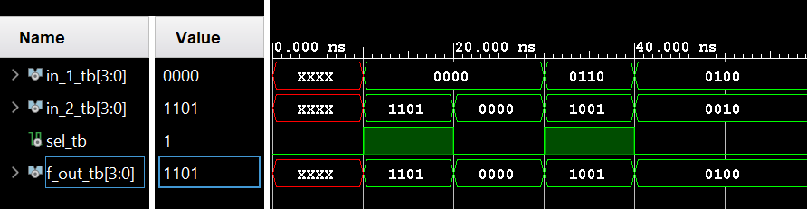
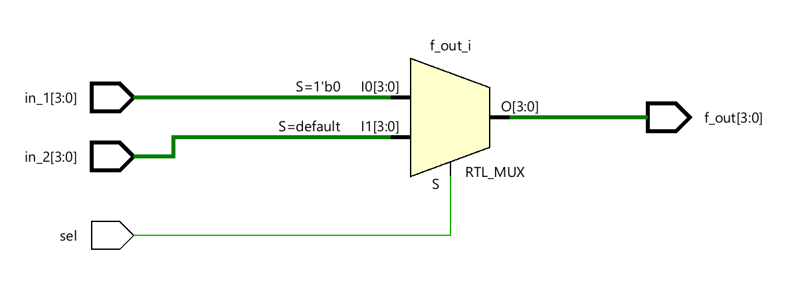

100 Days of FPGA
Day 1
RTL Code
library ieee;
use ieee.numeric_std.all;
use ieee.std_logic_1164.all;
entity mux21 is
port (
in_1 : in std_logic_vector(3 downto 0);
in_2 : in std_logic_vector(3 downto 0);
sel : in std_logic;
f_out : out std_logic_vector(3 downto 0)
);
end mux21;
architecture Behavioral of mux21 is
begin
process(sel, in_1, in_2)
begin
if (sel = '0') then
f_out <= in_1;
else
f_out <= in_2;
end if;
end process;
end Behavioral;
Testbench
library ieee;
use ieee.numeric_std.all;
use ieee.std_logic_1164.all;
entity mux_2_1_tb is
end entity mux_2_1_tb;
architecture mux_2_1 of mux_2_1_tb is
component mux21 is
port(
in_1 : in std_logic_vector(3 downto 0);
in_2 : in std_logic_vector(3 downto 0);
sel : in std_logic;
f_out : out std_logic_vector(3 downto 0)
);
end component;
signal in_1_tb : std_logic_vector(3 downto 0):= (others => 'X');
signal in_2_tb : std_logic_vector(3 downto 0):= (others => 'X');
signal sel_tb : std_logic:= '0';
signal f_out_tb : std_logic_vector(3 downto 0):= (others => 'X');
begin
UUT : mux21
port map(
in_1 => in_1_tb,
in_2 => in_2_tb,
sel => sel_tb,
f_out => f_out_tb
);
process
begin
wait for 10 ns;
in_1_tb <= (others => '0');
in_2_tb <= (others => '0');
sel_tb <= '0';
wait for 10 ns;
in_1_tb <= "0000";
in_2_tb <= "1101";
sel_tb <= '0';
wait for 10 ns;
in_1_tb <= "0100";
in_2_tb <= "1101";
sel_tb <= '1';
wait for 10 ns;
in_1_tb <= "0100";
in_2_tb <= "0000";
sel_tb <= '0';
wait for 10 ns;
assert false report "Finished testing.";
wait;
end process;
end mux_2_1;
Simulation Waveform

Schematic
